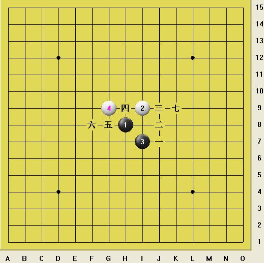

蒲月四打以上全是必胜么。。。。我想知道关于打点如何确定。。。1打2打3打。。6打。。。如何找打点
#1 蒲月四打以上全是必胜么。。。。我想知道关于打点如何确定。。。1打2打3打。。6打。。。如何找打点 作者：江西ゞ云格格 发表时间：2012-7-7 16:15:33
［ 江西五子 于 2012-7-8 9:11:36 时花20金币送鲜花一朵］
［ 江西五子 于 2012-7-8 9:11:36 时花20金币送鲜花一朵］
［ 江西五子 于 2012-7-8 9:12:16 时奖励此帖[金币加 100 威望加1］
［ 冰雪笑醉 于 2012-7-9 15:54:14 时花20金币送鲜花一朵］
［ 冰雪笑醉 于 2012-7-9 15:54:14 时花20金币送鲜花一朵］
［ 冷冷降温 于 2012-7-19 11:02:36 时花20金币送鲜花一朵］
［ 冷冷降温 于 2012-7-19 11:02:36 时花20金币送鲜花一朵］
#2 Re:蒲月四打以上全是必胜么。。。。我想知道关于打点如何确定。。。1打2打3打。。6打。。。如何找打点 作者：屏蔽 发表时间：2012-7-7 19:09:26
谱太多要学会分享。#3 Re:蒲月四打以上全是必胜么。。。。我想知道关于打点如何确定。。。1打2打3打。。6打。。。如何找打点 作者：冷冷降温 发表时间：2012-7-7 23:15:14
 支持楼上的
支持楼上的
#4 Re:蒲月四打以上全是必胜么。。。。我想知道关于打点如何确定。。。1打2打3打。。6打。。。如何找打点 作者：极地剑客 发表时间：2012-7-7 23:26:44
有mm就有必胜#5 Re:蒲月四打以上全是必胜么。。。。我想知道关于打点如何确定。。。1打2打3打。。6打。。。如何找打点 作者：aabb 发表时间：2012-7-7 23:56:25
是四打以下吧。。
#6 Re:屏蔽【==Re:蒲月四打以上全是必胜么。。。。我想知道关于打点如何确定。。。1打2打3打。。6打。。。如何找打点==】 作者：江西ゞ云格格 发表时间：2012-7-8 1:31:43
引用：你咋不分享给我一点啊。。一朵花都米有。。小气。。。你把研究的小谱谱给我点点就行了。。。请问九字老师怎么确定打点啊？教教我呗！
原文由 屏蔽 发表于 2012-7-7 19:09:26 :
谱太多要学会分享。
#7 Re:极地剑客【==Re:蒲月四打以上全是必胜么。。。。我想知道关于打点如何确定。。。1打2打3打。。6打。。。如何找打点==】 作者：江西ゞ云格格 发表时间：2012-7-8 1:33:32
引用：真滴？有MM就有必胜？切。。。那是有针对的吧！要加上有漂亮的小MM才有必胜尼！哦这世道]
原文由 极地剑客 发表于 2012-7-7 23:26:44 :
有mm就有必胜
#8 Re:aabb【==Re:蒲月四打以上全是必胜么。。。。我想知道关于打点如何确定。。。1打2打3打。。6打。。。如何找打点==】 作者：江西ゞ云格格 发表时间：2012-7-8 1:37:21
引用：经过我再看一眼确定是四打以上的。。包括六打点。。我喜欢要谱不怎么看谱。。感觉哦放在电脑里就有了保障一样。。。真的哦是四打以上的。。。
原文由 aabb 发表于 2012-7-7 23:56:25 :是四打以下吧。。
#9 Re:江西ゞ云格格【==Re:屏蔽【==Re:蒲月四打以上全是必胜么。。。。我想知道关于打点如何确定。。。1打2打3打。。6打。。。如何找打点==】==】 作者：屏蔽 发表时间：2012-7-8 2:31:48
引用：
原文由 江西ゞ云格格 发表于 2012-7-8 1:31:43 :引用：你咋不分享给我一点啊。。一朵花都米有。。小气。。。你把研究的小谱谱给我点点就行了。。。请问九字老师怎么确定打点啊？教教我呗！
原文由 屏蔽 发表于 2012-7-7 19:09:26 :
谱太多要学会分享。
我一般都记着。
#10 Re:蒲月四打以上全是必胜么。。。。我想知道关于打点如何确定。。。1打2打3打。。6打。。。如何找打点 作者：踵酃 发表时间：2012-7-8 4:48:09
想知道打点如何确定？ 首先要关注研究进度啊。
普及下基础知识之何为打点？ 也就是5手落的子。 1打最强，2打次强，以此类推。
蒲月四打以上全是必胜么？ 答案是否定的。 你要说蒲月四打以下到是可以， 记住打点越多黑越不利。
蒲月六打是必胜么？孰优孰劣还在探索阶段，所以否。
［ 屏蔽 于 2012-7-8 10:20:38 时花20金币送鲜花一朵］
［ 屏蔽 于 2012-7-8 10:20:38 时花20金币送鲜花一朵］
［ 江西ゞ云格格 于 2012-7-9 10:08:10 时花20金币送鲜花一朵］
［ 冷冷降温 于 2012-7-19 11:03:58 时花20金币送鲜花一朵］
#11 Re:蒲月四打以上全是必胜么。。。。我想知道关于打点如何确定。。。1打2打3打。。6打。。。如何找打点 作者：江西五子 发表时间：2012-7-8 9:13:41
格格开始研究山口了呀
#12 Re:江西五子【==Re:蒲月四打以上全是必胜么。。。。我想知道关于打点如何确定。。。1打2打3打。。6打。。。如何找打点==】 作者：江西ゞ云格格 发表时间：2012-7-9 9:37:40
引用：
原文由 江西五子 发表于 2012-7-8 9:13:41 :
格格开始研究山口了呀
啥山口。。。不懂。。。。看过规则也忘记了。。。我是想从头学呗。。。先把这怎么是一打二打三打了。。为什么这样标注弄明白啊。。。一步一步来学啊。。
#13 Re:屏蔽【==Re:江西ゞ云格格【==Re:屏蔽【==Re:蒲月四打以上全是必胜么。。。。我想知道关于打点如何确定。。。1打2打3打。。6打。。。如何找打点==】==】==】 作者：江西ゞ云格格 发表时间：2012-7-9 9:42:08
引用：
原文由 屏蔽 发表于 2012-7-8 2:31:48 :引用：
原文由 江西ゞ云格格 发表于 2012-7-8 1:31:43 :引用：你咋不分享给我一点啊。。一朵花都米有。。小气。。。你把研究的小谱谱给我点点就行了。。。请问九字老师怎么确定打点啊？教教我呗！
原文由 屏蔽 发表于 2012-7-7 19:09:26 :
谱太多要学会分享。我一般都记着。

 那你教我为什么要那样标注一打二打三打。。五打。。六打滴。。。为什么六打不能标成四打啊。。什么滴。。。
那你教我为什么要那样标注一打二打三打。。五打。。六打滴。。。为什么六打不能标成四打啊。。什么滴。。。 九九九九九九九九九老师哦麻烦一下啦。。教教偶呗。。
九九九九九九九九九老师哦麻烦一下啦。。教教偶呗。。 这没茶表情啊。。。我看这蜘蛛侠也不错。。送你啦。。希望你喜欢啊。。。教教偶啊。。。
这没茶表情啊。。。我看这蜘蛛侠也不错。。送你啦。。希望你喜欢啊。。。教教偶啊。。。
#14 Re:蒲月四打以上全是必胜么。。。。我想知道关于打点如何确定。。。1打2打3打。。6打。。。如何找打点 作者：屏蔽 发表时间：2012-7-9 9:47:36
你规则都忘了我教你个p。先学规则去。［ 踵酃 于 2012-7-9 10:03:03 时花20金币送鲜花一朵］
#15 Re:踵酃【==Re:蒲月四打以上全是必胜么。。。。我想知道关于打点如何确定。。。1打2打3打。。6打。。。如何找打点==】 作者：江西ゞ云格格 发表时间：2012-7-9 9:52:25
引用：谢谢！小老师。。我想了一下这打点的标注。。是针对四手白防点。。五手黑棋围绕着它进行或攻或防。远的当然是黑弱了。。近的当然强一点。。问题是怎么出来的各打点。。为什么它要叫1打而不是叫三打二打滴。。研究 出来是吗？再公证啊。。
原文由 踵酃 发表于 2012-7-8 4:48:09 :想知道打点如何确定？ 首先要关注研究进度啊。
普及下基础知识之何为打点？ 也就是5手落的子。 1打最强，2打次强，以此类推。
蒲月四打以上全是必胜么？ 答案是否定的。 你要说蒲月四打以下到是可以， 记住打点越多黑越不利。
蒲月六打是必胜么？孰优孰劣还在探索阶段，所以否。
［ 屏蔽 于 2012-7-8 10:20:38 时花20金币送鲜花一朵］
［ 屏蔽 于 2012-7-8 10:20:38 时花20金币送鲜花一朵］
 得到大家的默认啊。。
得到大家的默认啊。。 问得有点傻还是想问。。。还是不明白。。。
问得有点傻还是想问。。。还是不明白。。。
#16 Re:屏蔽【==Re:蒲月四打以上全是必胜么。。。。我想知道关于打点如何确定。。。1打2打3打。。6打。。。如何找打点==】 作者：江西ゞ云格格 发表时间：2012-7-9 9:55:51
引用：人家又不实战。。等我能杀你们了就去。。问题是规则大同小 异呗。。不过就是选打点的问题。。。你弄个四打五打研究好的。。杀人家必赢呗。。。。就这意思呗。。细节就饶了我吧。。。教我啊。。。
原文由 屏蔽 发表于 2012-7-9 9:47:36 :
你规则都忘了我教你个p。先学规则去。
#17 Re:蒲月四打以上全是必胜么。。。。我想知道关于打点如何确定。。。1打2打3打。。6打。。。如何找打点 作者：江西ゞ云格格 发表时间：2012-7-9 10:05:09
这次非要弄明白。。。既然来求明白。。。我就非要弄明白。。。。。。。我不信我弄不明白。。。。。。。以后我问题多着尼。。第一次第一问题我就没弄明白。。以后还怎么求问啊。。。。#18 Re:江西ゞ云格格【==Re:踵酃【==Re:蒲月四打以上全是必胜么。。。。我想知道关于打点如何确定。。。1打2打3打。。6打。。。如何找打点==】==】 作者：屏蔽 发表时间：2012-7-9 10:12:38
引用：
原文由 江西ゞ云格格 发表于 2012-7-9 9:52:25 :引用：谢谢！小老师。。我想了一下这打点的标注。。是针对四手白防点。。五手黑棋围绕着它进行或攻或防。远的当然是黑弱了。。近的当然强一点。。问题是怎么出来的各打点。。为什么它要叫1打而不是叫三打二打滴。。研究 出来是吗？再公证啊。。
原文由 踵酃 发表于 2012-7-8 4:48:09 :想知道打点如何确定？ 首先要关注研究进度啊。
普及下基础知识之何为打点？ 也就是5手落的子。 1打最强，2打次强，以此类推。
蒲月四打以上全是必胜么？ 答案是否定的。 你要说蒲月四打以下到是可以， 记住打点越多黑越不利。
蒲月六打是必胜么？孰优孰劣还在探索阶段，所以否。
［ 屏蔽 于 2012-7-8 10:20:38 时花20金币送鲜花一朵］
［ 屏蔽 于 2012-7-8 10:20:38 时花20金币送鲜花一朵］
你想叫数打或真打也是可以的。
#19 Re:江西ゞ云格格【==Re:屏蔽【==Re:蒲月四打以上全是必胜么。。。。我想知道关于打点如何确定。。。1打2打3打。。6打。。。如何找打点==】==】 作者：屏蔽 发表时间：2012-7-9 10:21:10
引用：
原文由 江西ゞ云格格 发表于 2012-7-9 9:55:51 :引用：人家又不实战。。等我能杀你们了就去。。问题是规则大同小 异呗。。不过就是选打点的问题。。。你弄个四打五打研究好的。。杀人家必赢呗。。。。就这意思呗。。细节就饶了我吧。。。教我啊。。。
原文由 屏蔽 发表于 2012-7-9 9:47:36 :
你规则都忘了我教你个p。先学规则去。
你规则都忘了我可懒得关注。
#20 Re:蒲月四打以上全是必胜么。。。。我想知道关于打点如何确定。。。1打2打3打。。6打。。。如何找打点 作者：屏蔽 发表时间：2012-7-9 10:22:02
而且我也觉得 提问的时候不要使用那么多乱七八糟哦多余的词句和标点［ 掌棋宣传员 于 2012-7-9 10:53:04 时花20金币送鲜花一朵］
#21 Re:蒲月四打以上全是必胜么。。。。我想知道关于打点如何确定。。。1打2打3打。。6打。。。如何找打点 作者：自来水 发表时间：2012-7-9 11:00:47
1.一般性规则：五手打点顺序按照 黑棋所得优势，由强至弱 进行排序，最强者为一打，次者为两打，后类推。
如蒲月

2.某些局面因为过去的称呼习惯而混淆了强弱顺序，则尊重过去称呼的习惯
如上图，5为1打，7为2打。。。
3.山口规则下经常无视必胜打点顺序，统称前N打必胜后，直接关注非必胜打点N+1，N+2…（参照1）
［ 山城刀客 于 2012-7-9 11:10:48 时花20金币送鲜花一朵］
［ 山城刀客 于 2012-7-9 11:10:48 时花20金币送鲜花一朵］
［ 屏蔽 于 2012-7-9 11:39:33 时花20金币送鲜花一朵］
［ 屏蔽 于 2012-7-9 11:39:33 时花20金币送鲜花一朵］
［ 冰雪笑醉 于 2012-7-9 15:56:32 时花20金币送鲜花一朵］
［ 失落刀 于 2012-7-9 21:02:24 时花20金币送鲜花一朵］
［ 失落刀 于 2012-7-9 21:02:24 时花20金币送鲜花一朵］
［ 失落刀 于 2012-7-9 21:02:24 时花20金币送鲜花一朵］
［ 失落刀 于 2012-7-9 21:02:24 时花20金币送鲜花一朵］
［ 失落刀 于 2012-7-9 21:02:24 时花20金币送鲜花一朵］
［ 失落刀 于 2012-7-9 21:02:24 时花20金币送鲜花一朵］
［ 江西ゞ云格格 于 2012-7-9 21:50:23 时花20金币送鲜花一朵］
［ 江西ゞ云格格 于 2012-7-9 21:50:23 时花20金币送鲜花一朵］
［ 江西ゞ云格格 于 2012-7-9 21:50:23 时花20金币送鲜花一朵］
［ 江西ゞ云格格 于 2012-7-9 21:50:23 时花20金币送鲜花一朵］
［ 江西ゞ云格格 于 2012-7-9 21:50:23 时花20金币送鲜花一朵］
［ 江西ゞ云格格 于 2012-7-9 21:50:23 时花20金币送鲜花一朵］
［ 江西ゞ云格格 于 2012-7-9 21:50:23 时花20金币送鲜花一朵］
［ 江西ゞ云格格 于 2012-7-9 21:50:23 时花20金币送鲜花一朵］
［ 江西ゞ云格格 于 2012-7-9 21:50:23 时花20金币送鲜花一朵］
#22 Re:蒲月四打以上全是必胜么。。。。我想知道关于打点如何确定。。。1打2打3打。。6打。。。如何找打点 作者：江西ゞ云格格 发表时间：2012-7-9 22:13:16
哦谢谢自来水。。。。。我想了一下。。。看了一下谱。。哦爱网站的互动棋谱。。。。
关于五手打点强弱顺序。。乐刀说参照六手防（攻）来定位。。这是一个重要的方面。。。那么还有一个
就是连接方面啦。连接点多。。。。发展方向多。。自然会成为强打点。 相对于4手五手打点远的。。。
有一定的外势攻围。。也是分强弱大小而定打点。。
那么应该这样说现在五手打点的强弱也是大家有了一定的研究 才会确定4打5打点。。6 7 吧。。。
我的理解不知道对不对啦。。。希望大家提意见批评指正！
#23 Re:蒲月四打以上全是必胜么。。。。我想知道关于打点如何确定。。。1打2打3打。。6打。。。如何找打点 作者：左伟光 发表时间：2012-7-17 16:59:15
我记得我有4打必胜谱的。#24 Re:蒲月四打以上全是必胜么。。。。我想知道关于打点如何确定。。。1打2打3打。。6打。。。如何找打点 作者：左伟光 发表时间：2012-7-17 17:02:34
都是网上下载的，也没看过。#25 Re:江西ゞ云格格【==Re:极地剑客【==Re:蒲月四打以上全是必胜么。。。。我想知道关于打点如何确定。。。1打2打3打。。6打。。。如何找打点==】==】 作者：极地剑客 发表时间：2012-7-18 3:12:53
引用：咋会了~俺是老实人~
原文由 江西ゞ云格格 发表于 2012-7-8 1:33:32 :引用：真滴？有MM就有必胜？切。。。那是有针对的吧！要加上有漂亮的小MM才有必胜尼！哦这世道]
原文由 极地剑客 发表于 2012-7-7 23:26:44 :
有mm就有必胜